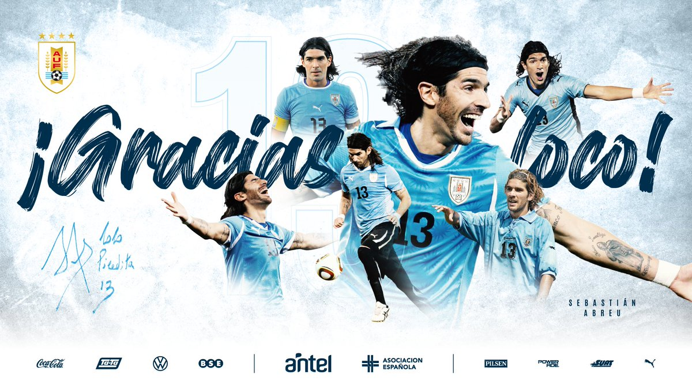

Uruguay campeona del mundo
Uruguay se consagra campeona del mundo tras derrotar 5-0 a la seleccion de españa en una final llena de futbol, donde el loco abreu nuevamente fue figura y goleador del encuentro marcando los 5 goles del partido, con estos tantos el "loco" sebastian abreu se convierte en el goleador del torneo marcando 21 goles, estas fueron las palabras del goleador uruguayo: "quiero agradecer a mi familia, al dt por haber confiado en mi y en especial a mi medico privado que gracias a su nueva medicina pude volver a las canchas y cumplir mi sueño". por otro lado el dt Luis Enrique dijo: "asi no tiene gracia, jugar con el loco es trampa, no se vale"